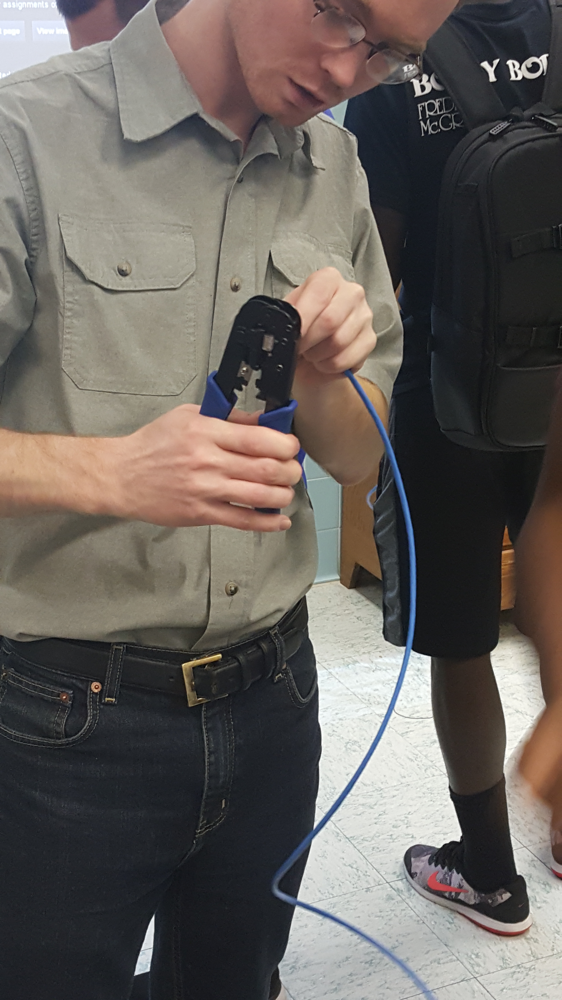

As a full-time college student, I do not have much free time, but when I do have some time on my hands I have a few hobbies that I like to take up. I enjoy working on computers. I mean this in every way possible, putting them together, taking them apart, repairing them, etc. Working with a computer in this manner is a great way to learn more about computers which is why I belive I like it so much. Most people just use their computer and never bother to open the case or really understand how the internals work. A great hobby of mine is digging deep into the insides of the machine and tinkering with it to try to learn more about just how exactly it does its job.
Another great hobby of mine is computer programming. I know how to program in C++, C#, and JavaScript. I am always wanting to learn new programming languages as it seems that there is always a new one on the rise.  I find programming to be a really great hobby because it challenges the way that you think about problems. Computers operate very differently than humans do and in order to get the computer to solve a problem for you, you must think in the way that computers do, not how humans do. This is an intellectual challenge that I believe has taught me many skills that can be applied to other activities, not just programming.
Not only do I personally enjoy programming, but another hobby of mine is teaching other people programming. I get this opportunity quite often as Brescia, being that there are many new computer science students. It is a truly rewarding experience when someone does not understand something at first but then, with your help and teaching, comes to gain an understanding of a concept. This makes me feel as if I have truly helped the person out in some way. I believe programming is especially important in our world today and for that reason, teaching programming will continue to be a valued hobby of mine.
Other useful links...


Brescia

Owensboro

Telephone